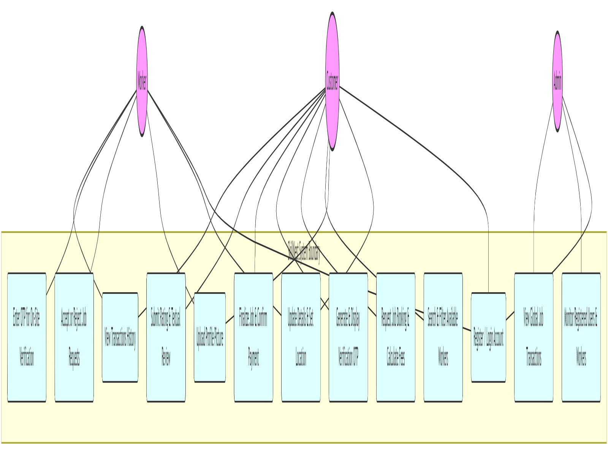
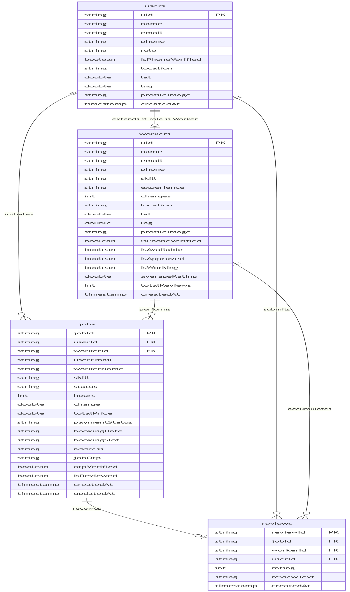
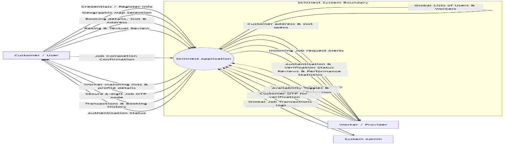
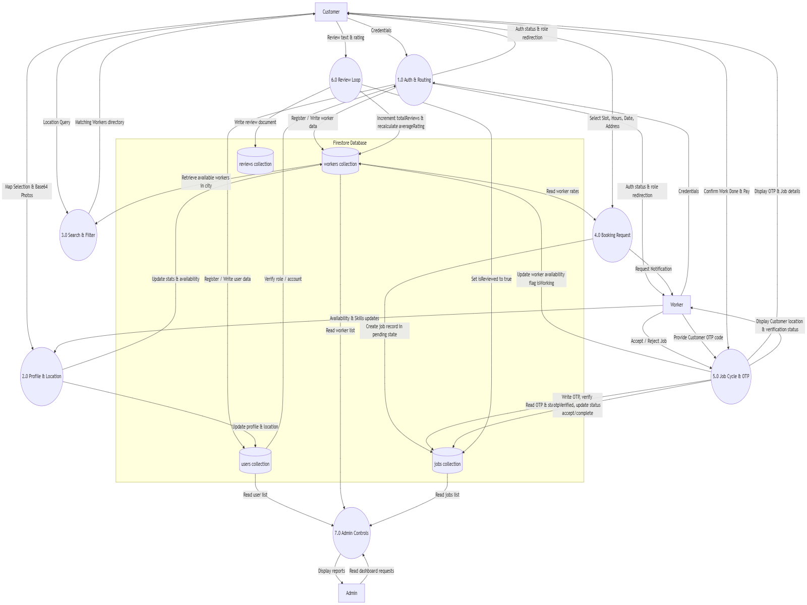
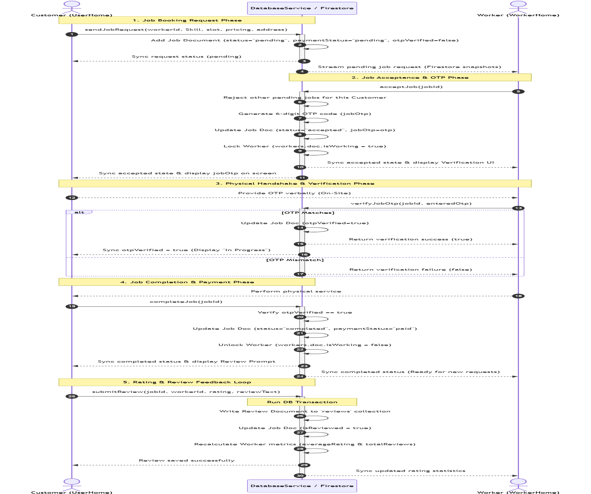
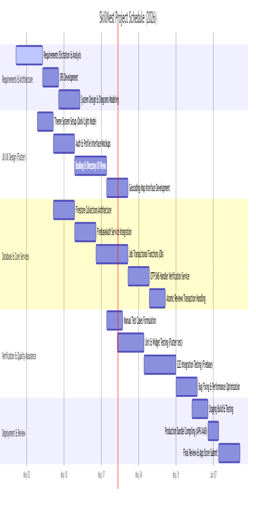

On-Demand Local Service Finder & Booking Platform
Software Requirements Specification & System Architecture Design
Created: May 2026






| Test ID | Feature Area | Verification Steps | Expected Behavior |
|---|---|---|---|
| TC-AUTH-02 | Worker Sign Up | Submit name, email, credentials, and skills. | Worker doc saved, redirects to WorkerHome. |
| TC-PROF-02 | Location Picker | Select point on Map, execute Geocoding. | Saves coordinates, resolves location city string. |
| TC-SCH-01 | City Search Filter | Open lookups page in city 'Guwahati'. | Returns matching providers. Busy workers excluded. |
| TC-JOB-03 | OTP Verification | Worker enters matching customer code. | Updates otpVerified = true. Work commences. |
| TC-REV-01 | Atomic Reviews | Submit 4-star feedback reviews. | Updates averages and review counts atomically. |
• Core Framework: Flutter SDK (Dart) for high-performance reactive clients.
• Database Engine: Google Cloud Firestore NoSQL Database.
• Mapping Services: OSM Tile API using flutter_map wrapper and Geocoding APIs.
• Authentication: Firebase Authentication Services.
• Specifications: Complete SRS, diagrams (Use Case, ERD, DFD, Sequence), and Test Cases.